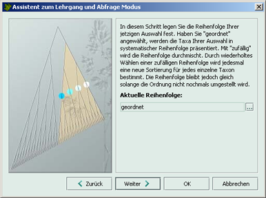

Es stehen Ihnen zwei Reihenfolgen zur Verfügung:
Die Taxa des Lernstoffs werden systematisch geordnet dargestellt.
Die Taxa des Lernstoffs werden zufällig gemischt.
So legen Sie die aktuelle Reihenfolge fest:
Klicken Sie auf die Schaltfläche
 .
.
Es wird automatisch die andere Reihenfolge ins Feld aktuelle Reihenfolge eingetragen.
